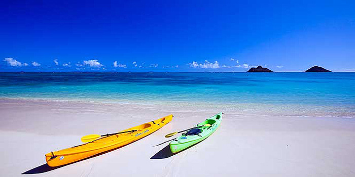

그림 위에 마우스를 올린다면
추운 겨울 따뜻한 해변으로의 여행이 더욱 갈망되는 시기입니다. 그래서 소개할 곳은 트립어드바이저가 선정한 '세상에서 가장 아름다운 해변 10곳'입니다. 2년간의 트립어드바이저 조사 결과 프로베덴시알레스섬에 위치한 'Turks and Caicos'가 1위로 꼽혔습니다. 선정된 해변들은 사용자들이 양적·질적으로 가장 훌륭하다는 리뷰를 남긴 곳들입니다. 2위는 'Baia do Sancho'입니다. 이 해변은 브라질의 페르난도 데 노로냐에 위치해 있습니다. 바이아 도 산초는 터크스케이커스제도가 1위로 선정되기 전까지 쭉 1위를 유지했습니다. 3위는 쿠바에 위치한 'Playa Paraiso'해변입니다. 한 트립어드바이저는 이 해변에 대한 후기로 "꿈이 이루어졌다"고 남기기도 했습니다. 프랄린 섬에 위치한 'Anse Lazio'가 4위로 선정됐습니다. "깨끗하고 맑은 물"이 이 곳을 한 마디로 표현하는 말일 수 있겠습니다.
베네수엘라에 위치한 'Cayo de Agua'해변이 5위입니다. 6위는 'Flamenco Beach'입니다. 푸에르토 리코에 위치한 이 해변은 왜 상위에 랭크됐냐는 질문에 "고운 모래와 혼을 쏙 빼간 바닷물"이라는 답변이 주를 이뤘습니다. 7위는 스페인에 위치한 'Playa de Ses Illetes'입니다. 열광적인 한 리뷰어는 "자연을 배회했다"라는 말을 남기기도 했습니다. 8위에는 아시아의 해변이 랭크됐습니다. 미얀마에 위치한 'Ngapali Beach'인데요. 자연스럽게 아시아에서 가장 아름다운 해변으로도 선정됐습니다.
온두라스의 'West Bay Beach'는 9위에 올랐습니다. 만족할만한 스노우쿨링을 할 수 있다는 점이 상위에 랭크된 이유 중 하나였습니다. 마지막으로 소개할 곳은 필리핀에 있는 'Nacpan Beach'입니다. 이용자는 "만약 당신이 스쿠터를 빌린다면 정말 가치 있을 것"이라며 해변을 이용하는 팁을 남기기도 했습니다.